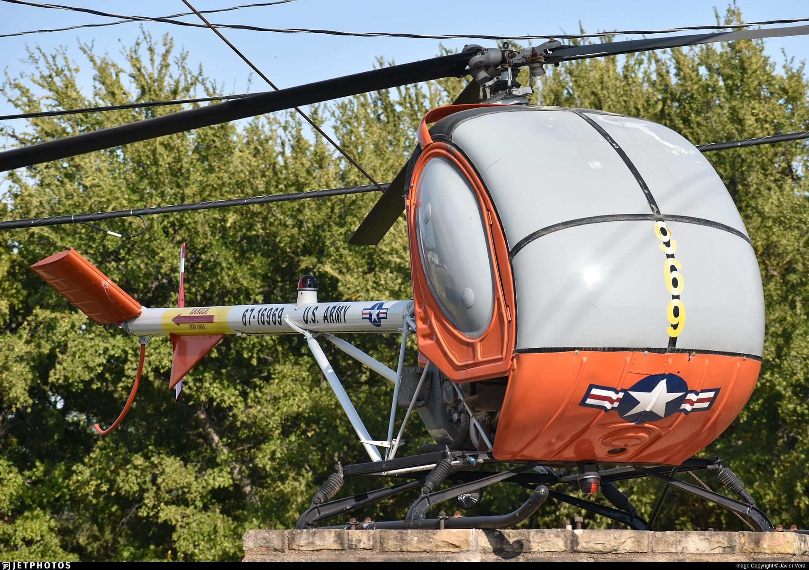
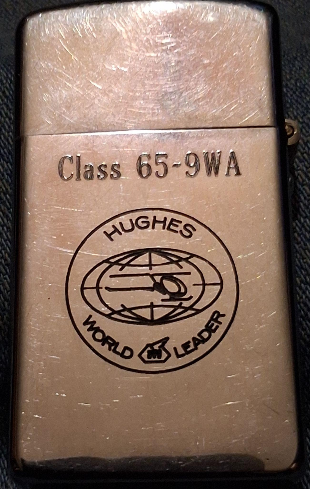
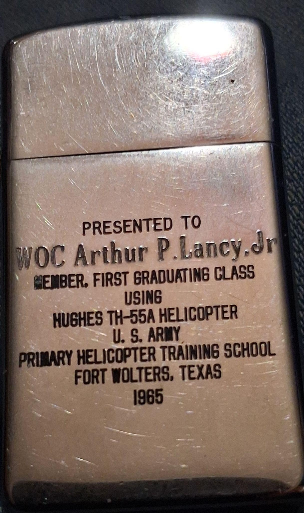
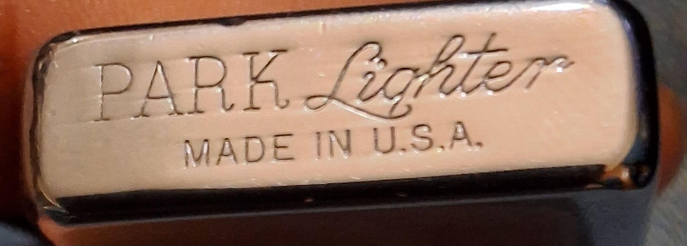
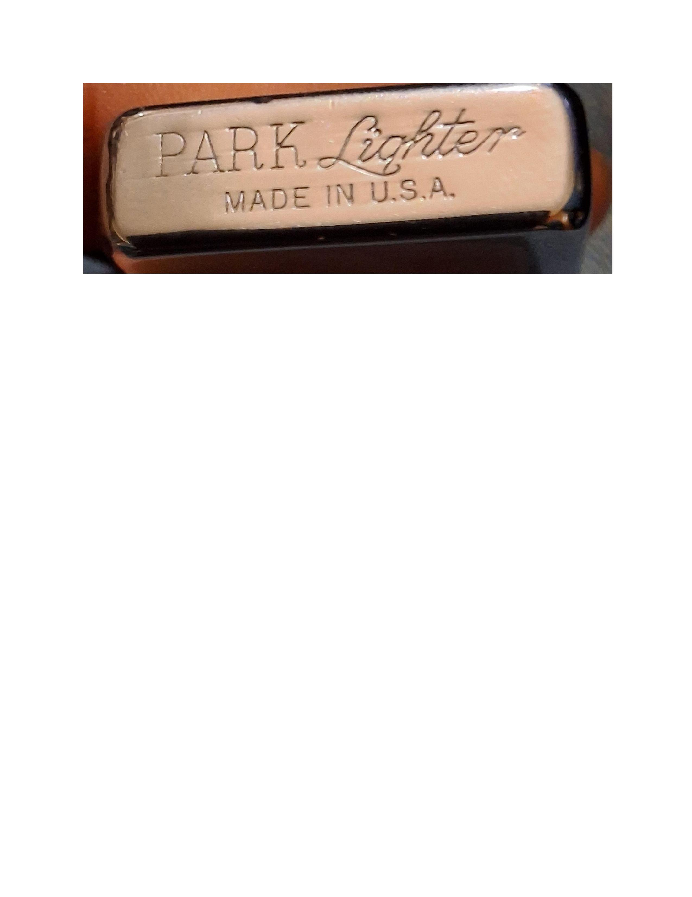

Museum Grade Artifact
The Arthur P. Lancy Jr. Collection • Class 65-9WA • Fort Wolters
Chapter 2: Fort Wolters History


The 1965 training cycle at Fort Wolters represented the peak of U.S. Army primary helicopter instruction. This artifact honors WOC Arthur P. Lancy Jr. and the First Graduating Class to master the Hughes TH-55A Osage.
Chapter 3: The Presentation Lighter

Front: The Hughes "World Leader" insignia and Class 65-9WA engraving.

Back: Direct presentation inscription to WOC Arthur P. Lancy Jr.
Chapter 4: Provenance & Detail


Verified mid-century PARK manufacturing with original brushed steel finish. The engravings remain deep and clear, a testament to its preservation over 60 years.